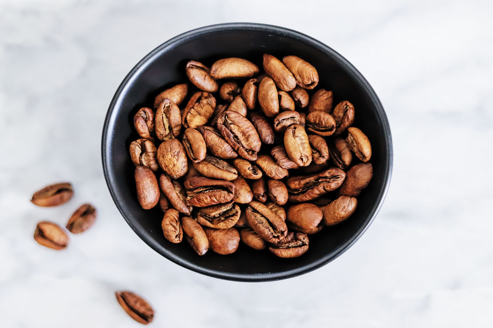

Liberica
Origin and Growth Conditions:
Liberica coffee beans are native to West Africa and are now mainly grown in the Philippines and parts of Indonesia.
These beans grow well in tropical lowland regions with high humidity and can tolerate a wide range of soil types.
They have a relatively large and irregular - shaped bean compared to Arabica and Robusta.
Flavor Profile:
Liberica beans have a unique and somewhat wild flavor.
The taste is often described as having a smoky or smoky - peat - like quality, along with fruity and floral notes.
There can be a distinct musty or earthy undertone, and some people find it has a slightly fermented flavor.
Caffeine Content:
The caffeine content of Liberica beans is similar to that of Arabica, around 1.2 - 1.5% caffeine by weight.
Uses:
Liberica is not as widely used as Arabica or Robusta.
It's mainly used in local coffee production in the regions where it's grown.
Some specialty coffee roasters are starting to experiment with Liberica to create unique blends or single - origin offerings.
